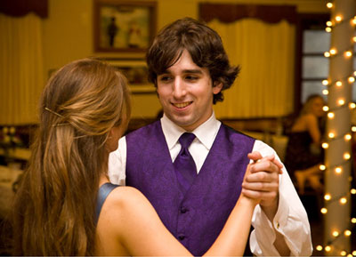
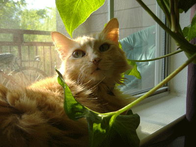

Angela
My costuming history actually began in fourth grade after reading
Little House on the Prairie. I was obsessed
with dressing up as Laura Ingalls Wilder and even made my very own sunbonnet from scratch and wore it around the house.
It wasn't until high school that I got into cosplay with my friends and brother, sewing my Ukyo costume by hand from
material I got at a garage sale. Soon after that we picked up a used Singer sewing machine for $20 at another
garage sale, which lasted us six tumultuous years until my parents finally bought me a really really nice Singer industrial for Christmas
a few years back. (Thanks Mom and Dad!).
In college I skipped straight to intermediate costuming where we studied wig-making and styling, pattern drafting and draping,
and I worked what seemed like endless hours in the school's costume shop for the theatre.
While my first passion will always be writing (which was my actual major in school), costuming comes in at a close second. I love the
satisfaction that comes from pointing to something beautiful and practical and hardy and saying "I made that."
-Angela
John
As a kid I always wanted the perfect Star Fleet Uniform and saved my allowance for months to afford the Halloween-store version. I wore it every single
Halloween from 4th grade until High School. In High school we started going to Anime Conventions and my standards for
costumes jumped drastically--from then on I wasn't happy unless it was perfect. And the only way to get the perfect costume was
to make it myself!
I not only like the costume to be perfect, but I like all of the little details to be practical and durable. I like to know what something was
actually made of
and if possible, reproduce it in that same material, something that a lot of costumers do not care about at all. And I know why--it can be incredibly expensive!
Luckily, in college I met a bunch of people in SCA and LARP groups who helped me learn industry shortcuts, tips, and tricks to make my props. I've found that my favorite
part of costume making is the armor, weapons, and gadgets. One of my proudest achievements is the working night-vision goggles I
made using old camcorder parts, vacuumformed plastic, and little LEDs. But my three complete chain mail shirts might tell you something about my level of obsession as well...
In real life I am a computer programmer, which is very lucrative, but this is my passion and my hobby which I can improve upon as a craftsman forever. (And is much more
useful in case of an apocalypse.)
-John

Ember
Ember is Angela's cat. She's orange and fluffy and loves to get fur on fabric that is laying on the floor ready to be cut.
She is named after a character from the comic book
Elfquest.
